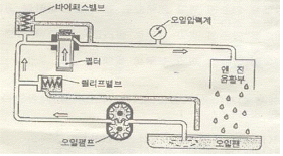
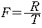
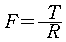
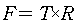
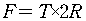
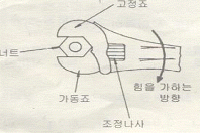

자동차정비기능사 (2008-07-13 기출문제)
1과목: 자동차공학
1. 100PS 엔진으로 500kgf의 물건을 30m 들어 올리는데 필요한 시간은?
- 0.3s
- 3.3s
- 20s
- 30s
(정답률: 49%)
2. 기관 워밍업 후 정상주행 상태에서 산소센서의 신호에 따라 연료량을 조정하여 공연비를 보정하는 방식은?
- 자기진단 시스템
- MPI 시스템
- 피드백 시스템
- 에어컨 시스템
(정답률: 71%)

3. 디젤기관의 연소실 중 예연소실의 분사압력으로 적합한 것은?
- 100 ∼120 kgf/cm2
- 200 ∼300 kgf/cm2
- 400 ∼500 kgf/cm2
- 300 ∼700 kgf/cm2
(정답률: 55%)
4. 연소실 체적이 40cc이고, 총 배기량이 1280cc인 4기통기관의 압축비는?
- 6
- 9
- 18
- 33
(정답률: 54%)
5. 전자제어 연료분사 장치에서 인젝터를 설명한 것 중 틀린 것은?
- 플런저 : 니들 밸브를 누르고 있다가 ECU 신호에 의해 작동된다.
- 솔레노이드 : ECU 신호에 의해 전자석이 된다.
- 니들밸브 : 연료 압력을 일정하게 유지시킨다.
- 배선 커넥터 : 솔레노이드에서 ECU로부터 신호를 연결하여 준다.
(정답률: 57%)
6. 기화기식과 비교한 전자제어 가솔린 연료분사 장치의 장점이라고 할 수 없는 것은?
- 고출력 및 혼합비 제어에 유리하다.
- 연료 소비율이 낮다.
- 부하변동에 따라 신속하게 응답한다.
- 적절한 혼합비 공급으로 유해 배출가스가 증가된다.
(정답률: 81%)
7. 크랭크각 신호에 따라 각 실린더의 인젝터를 동시에 개방하여 연료를 공급하는 분사방식은?
- 동기분사
- 동시분사
- 비동기분사
- 순차분사
(정답률: 85%)
8. 윤활유 구비조건으로 틀린 것은?
- 점도가 적당할 것
- 열과 산에 대하여 안전성이 있을 것
- 응고점이 높을 것
- 인화점과 발화점이 높을 것
(정답률: 64%)
9. 자동차기관의 기본 사이클이 아닌 것은?
- 공압 사이클
- 정적 사이클
- 정압 사이클
- 복합 사이클
(정답률: 81%)
10. 자동차 높이의 최대허용 기중으로 맞는 것은?
- 3.5m
- 3.8m
- 4.0m
- 4.5m
(정답률: 66%)
11. 피스톤링의 3대 작용에 해당되지 않는 것은?
- 기밀유지작용
- 오일제어작용
- 열전도작용
- 오일청정작용
(정답률: 76%)
12. MAP 센서의 기능으로 맞는 것은?
- 흡기 매니폴드 내의 공기온도를 측정한다.
- 에어클리너 내의 공기량을 직접 측정한다.
- 흡기 매니폴드 내의 부압을 절대압력으로 측정한다.
- 에어클리너 내의 절대압력을 측정한다.
(정답률: 68%)
13. 엔진의 작동 온도가 낮을 때와 혼합비가 희박하여 실화되는 경우에 증가하는 배출가스는?
- 산소
- 탄화수소
- 질소산화물
- 이산화탄소
(정답률: 55%)
14. 스로틀 밸브의 열림 정도를 감지하는 센서는?
- 차속 센서
- 산소 센서
- W.T.S
- T.P.S
(정답률: 81%)
15. 그림과 같이 오일펌프에 의해 압송되는 윤활유가 모두 여과기를 통과한 다음 윤활부로 공급되는 방식은?

- 샨트식
- 자력식
- 분류식
- 전류식
(정답률: 58%)
16. 디젤기관의 분사펌프식 연료장치의 연료공급 순서가 맞는 것은?
- 연료탱크-연료여과기-연료공급펌프-연료여과기-분사펌프-고압파이프-분사노즐-연소실
- 연료탱크-연료여과기-연료공급펌프-분사펌프-연료여과기-고압파이프-분사노즐-연소실
- 연료탱크-연료공급펌프-연료여과기-분사펌프-연료여과기-고압파이프-분사노즐-연소실
- 연료탱크-연료여과기-연료공급펌프-연료여과기-분사펌프-분사노즐-고압파이프-연소실
(정답률: 56%)
17. LPG 기관에서 액체 LPG를 기체 LPG로 전환 시키는 장치는?
- 믹서
- 연료봄베
- 긴급차단 솔레노이드 밸브
- 베이퍼라이저
(정답률: 81%)
18. 동력조향장치에서 자동차의 속도에 따라 핸들의 조향력을 변화시켜주는 장치는?
- 속도 감응형 동력조향장치
- 엔진회전수 감응형 동력조향장치
- 흴 스피드 감응형 동력조향장치
- 조향각도 감응조향장치
(정답률: 62%)
19. 차량 속도를 감속하거나, 정지시키기 위한 장치는?
- 현가장치
- 조향장치
- 주행장치
- 제동장치
(정답률: 87%)
20. 4행정 6기통 자동차기관에서 폭발순서가1-5-3-6-2-4인 엔진의 2번 실린더 흡기행정 중이라면 5번 실린더는 무슨 행정을 하는가?
- 폭발행정 중
- 배기행정 초
- 흡기행정 중
- 압축행정 말
(정답률: 64%)
2과목: 자동차정비 및 안전기준
21. 연소실 설계시 고려할 사항으로 틀린 것은?
- 화염전파에 요하는 시간을 가능한 한 짧게 한다.
- 가열되기 쉬운 돌출부를 두지 않는다.
- 연소실의 표면적이 최대가 되게 한다.
- 압축행정에서 혼합기에 와류를 일으키게 한다.
(정답률: 66%)
22. 공기 과잉률이란?
- 이론공연비
- 실제공연비
- 공기흡입량÷연비소비량
- 실제공연비÷이론공연비
(정답률: 72%)
23. 밸브스프링 서징현상을 방지하는 방법으로 틀린 것은?
- 밸브스프링 고유 진동수를 높게 한다.
- 부등 피치 스프링이나 원추형 스프링을 사용한다.
- 피치가 서로 다른 이중 스프링을 사용한다.
- 사용 중인 스프링보다 피치가 더 큰 스프링을 사용한다.
(정답률: 55%)
24. 클러치 접속시 회전 충격을 흡수하는 스프링은?
- 쿠션스프링
- 리테이닝 스링
- 댐퍼 스프링
- 클러치 스프링
(정답률: 67%)
25. 제동장치에서 마스터 실린더의 내경이 2cm, 푸시로드에 100kgf의 힘이 작용할 때 브레이크 파이프에 작용하는 압력은 약 얼마 인가?
- 32kgf/cm2
- 25kgf/cm2
- 10kgf/cm2
- 2kgf/cm2
(정답률: 45%)
26. 드라이브 라인의 설명 중 틀린 것은?
- 추진축의 앞뒤 요크는 동일 평면에 있어야 한다.
- 추진축의 토션 댐퍼는 충격을 흡수하는 일을 한다.
- 슬립조인트 설치목적은 거리의 신축성을 제공해 주는 것이다.
- 자재 이음은 일정 한도 내의 각도를 가진 두 축 사이에 회전력을 전달하는 것이다.
(정답률: 32%)
27. 유압 브레이크에서 잔압과 관계가 있는 부품은?
- 마스터 실린더 피스톤 1차 컵과 2차 컵
- 마스터 실린더의 첵밸브와 복귀 스프링
- 마스터 실린더 오일 탱크
- 마스터 실린더 피스톤
(정답률: 63%)
28. ABS의 구성 부품중 휠의 회전속도를 감지하여 컨트롤유닛으로 보내는 역할을 하는 것은?
- 휠 스피드 센서
- 하이드로릭 센서
- 솔레노이드 밸브
- 어큐뮬레이터
(정답률: 80%)
29. 자동차 주행 중 가속페달 작동에 따라 저항 변화가 일어나는 센서는?
- 공기온도센서
- 수온센서
- 크랭크 포지션센서
- 스로틀 포지션센서
(정답률: 74%)
30. 수동 변속기 조작시 이중 기어 물림 방지를 위한 장치는?
- 첵 볼
- 이중롤러
- 릴리스 볼
- 인터록
(정답률: 80%)
31. 자동변속기 장착 자동차에서 시프트 레버의 조작을 받아 변속레인지를 결정하는 밸브 보디의 구성요소는?
- 압력조정 밸브
- 매뉴얼 밸브
- 거버너 밸브
- 스로틀 밸브
(정답률: 57%)
32. 전자제어 자동변속기에서 제어하는 항목이 아닌 것은?
- 변속단 제어
- 댐퍼클러치 제어
- 거버너 제어
- 라인압 가변 제어
(정답률: 45%)
33. ECS 장착 자동차에서 주행 중 급커브 상태를 감지하는 센서는?
- 차속센서
- 차고 센서
- 스티어링 휠 각도 센서
- 휠 속도 센서
(정답률: 72%)
34. 자동차의 축간거리가 2.9m 조향각이 30°이다. 이 자동차의 최소회전반경은 몇 m인가?(단, 바퀴의 접지면 중심과 킹핀과의 거리는 0.2m 이다.)
- 5m
- 6m
- 7m
- 8m
(정답률: 56%)
35. 토크 변환기에서 클러치점(clutch point)을 가장 옳게 설명한 것은?
- 펌프가 회전하는 시점
- 터빈이 회전하는 시점
- 스테이터가 공전하는 시점
- 클러치가 미끄러지는 시점
(정답률: 54%)
36. 사이드 슬립 테스터 지시값이 4이다. 이것은 주행 1km에 대하여 앞바퀴의 슬립량이 얼마인 것을 표시하는가?
- 4mm
- 4cm
- 40cm
- 4m
(정답률: 52%)
37. 자동차에서 튜브리스 타이어의 특징으로 틀린 것은?
- 못에 찔려도 공기가 급격히 새지 않는다.
- 유리조각 등에 의해 찢어지는 손상도 수리하기 쉽다.
- 고속 주행하여도 발열이 적다.
- 림이 변형되면 공기가 새기 쉽다.
(정답률: 67%)
38. 구동바퀴가 자동차를 미는 힘을 구동력이라고 하는데 구동력을 구하는 공식은?(단, F:구동력 T:축의회전력 R:바퀴의 반경)




(정답률: 55%)
39. 자동차의 가로축(좌/우 방향 축)을 중심으로 하는 전/후 회전진동은?
- 롤링(rolling)
- 요잉(yawing)
- 피칭(pitching)
- 바운싱(bouncing)
(정답률: 48%)
40. 전자제어 동력 조향장치의 오일펌프 내부에 있는 플로우컨트롤 밸브에 대한 설명 중 틀린 것은?
- 조향기어 박스로 가는 오일의 양을 조절할 수 있다.
- 고속회전시 조향 기어 박스로 가는 오일의 양을 많게 한다.
- 플로우 컨트롤 밸브 내부에는 릴리프밸브가 있다.
- 저속 회전시는 조향기어 박스로 가는 오일의 양을 많게 한다.
(정답률: 39%)
3과목: 안전관리
41. 20Ω 저항의 양 끝에 전압을 가할 때 2A 전류가 흐른다면 이 저항에 걸리는 전압은?
- 10V
- 20V
- 30V
- 40V
(정답률: 50%)
42. 온도에 따른 축전지 전해액 비중의 변화에 대한 설명 중 맞는 것은?
- 온도가 올라가면 비중도 올라간다.
- 온도가 올라가면 비중은 내려간다.
- 비중은 온도와는 상관없다.
- 일정 온도 이상에서만 비중이 올라간다.
(정답률: 56%)
43. 자동차에서 발전기가 하는 역할을 설명한 것 중 가장 관련이 적은 것은?
- 소비되는 전류를 보상한다.
- 축전지만 충전한다.
- 전기부하에 에너지를 공급하고, 축전지를 충전한다.
- 등화장치에 필요한 전류를 공급한다.
(정답률: 73%)
44. 자동차 에어컨에서 고압의 액체 냉매를 저압의 액체 냉매로 바꾸는 구성품은?
- 압축기(compressor)
- 리퀴드 탱크(liquid tank)
- 팽창 밸브(expansion valve)
- 에바포레이터(evaporator)
(정답률: 62%)
45. 제너 다이오드를 사용하는 회로는?
- 고주파 회로
- 저압 정류회로
- 브리지 정류회로
- 정 전압회로
(정답률: 56%)
46. 전자점화기구에 점화신호를 컨트롤 유닛(control unit)으로 전송하는 기능을 가진 부품은?
- 아마추어
- 점화코일
- 로터
- 마그네틱 픽업 코일
(정답률: 38%)
47. 기동전동기의 회전력 시험은 어떠한 것을 측정 하는가?
- 정지 회전력을 측정한다.
- 공전 회전력을 측정한다.
- 중속 회전력을 측정한다.
- 고속 회전력을 측정한다.
(정답률: 33%)
48. 다음 중 오토라이트에 사용되는 조도센서는 무엇을 이용한 센서인가?
- 다이오드
- 트랜지스터
- 서미스터
- 광전도 셀
(정답률: 54%)
49. 편의장치 중 중앙집중식 제어장치(ETACS 또는 ISU)의 기능 항목이라고 할 수 없는 것은?
- 도어 열림 경고
- 디포거 타이머
- 엔진 체크 경고등
- 점화 키 홀 조명
(정답률: 44%)
50. 엔진 오일압력이 일정 이하로 떨어질 때, 점등되어 운전자에게 경고해주는 것은?
- 연료 잔량 경고등
- 주차브레이크 등
- 엔진오일 경고등
- 냉각수 과열 경고등
(정답률: 82%)
51. 작업시작 전의 안전점검에 관한 사항 중 잘못 짝지어진 것은?
- 인적인 면 - 건강상태, 기능상태
- 물리적인 면 - 기계기구 설비, 공구
- 관리적인면 - 작업내용, 작업순서
- 환경적인 면 - 작업방법, 안전수칙
(정답률: 65%)
52. 소화 작업의 기본요소가 아닌 것은?
- 가연 물질을 제거한다.
- 산소를 차단한다.
- 점화원을 냉각시킨다.
- 연료를 기화시킨다.
(정답률: 76%)
53. 그림의 화살표 방향으로 조정 렌치를 사용 하여야 하는 가장 중요한 이유는?

- 볼트나 너트의 머리 손상을 방지하기 위하여
- 작은 힘으로 풀거나 조이기 위하여
- 렌치의 파손을 방지하기 위함이며 또 안전한 자세이기 때문임
- 작업의 자세가 편리하기 때문에
(정답률: 70%)
54. 공기공구 사용에 대한 설명 중 틀린 것은?
- 공구의 교체시에는 반드시 밸브를 꼭 잠그고 하여야 한다.
- 활동 부분은 항상 윤활유 또는 그리스를 급유한다.
- 사용시에는 반드시 보호구를 착용해야 한다.
- 공기공구를 사용할 때에는 밸브를 빠르게 열고 닫는다.
(정답률: 62%)
55. 연삭 작업시 안전사항 중 옳지 않은 것은?
- 나무 해머로 연삭숫돌을 가볍게 두들겨 맑은 음이 나면 정상이다.
- 연삭숫돌의 표면이 심하게 변현된 것은 반드시 수정한다.
- 받침대는 숫돌차의 중심선보다 낮게한다.
- 연삭 숫돌과 받침대와의 간격은 3mm 이내로 유지한다.
(정답률: 60%)
56. 밸브 래핑 작업을 수작업으로 할 때 가장 효율적이며 안전하게 작업하는 방법은?
- 래퍼를 양손에 끼고 오른쪽으로 돌렸다.
- 래퍼를 양손에 끼고 왼쪽으로 돌리면서 이따끔 가볍게 충격을 준다.
- 래퍼를 양손에 끼고 좌우로 돌리면서 이따금 가볍게 충격을 준다.
- 래퍼를 양손에 끼고 좌우로 돌렸다.
(정답률: 51%)
57. 차량에서 허브(hub)작업을 할 때 지켜야 할 사항으로 가장 적당한 것은?
- 잭(jack)으로 든 상태에서 작업한다.
- 잭(jack)과 견고한 스탠드로 받치고 작업한다.
- 프레임(frame)의 한쪽으로 받치고 작업한다.
- 차체를 로프(rope)로 고정시키고 작업한다.
(정답률: 70%)
58. 집광식 전조등 시험기로 전조등 시험시 주의사항 중 틀린 것은?
- 각 타이어의 공기압은 규정대로 할 것
- 시험기에 차량을 마주보게 할 것
- 밑바닥이 수평일 것
- 공차상태의 차량에 운전자 밑 보조자 두 사람이 탈 것
(정답률: 76%)
59. 기관을 운반하기 위해 체인 블록을사용할 때의 안전사항 중 가장 옳은 것은?
- 기관은 반드시 체인으로만 묶어야 한다.
- 노끈 및 밧줄은 무조건 굵은 것을 사용한다.
- 가는 철선이나 체인으로 기관을 묶어도 좋다.
- 체인 및 리프팅은 중심부에 튼튼히 매어야 한다.
(정답률: 70%)
60. 정비작업 시 지켜야 할 안전수칙 중 잘못된 것은?
- 작업에 맞는 공구를 사용한다.
- 작업장 바닥에는 오일을 떨어뜨리지 않는다.
- 전기장치는 기름기 없이 작업을 한다.
- 잭(jack)을 사용하여 차체를 올린 후 손잡이를 그대로 두고 작업한다.
(정답률: 84%)